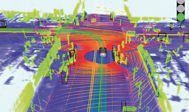
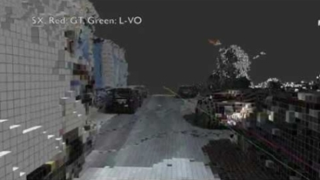

Simultaneous Localization and Mapping (SLAM) using Differentiable Programming
Problem statement
Simultaneous Localization and Mapping (SLAM) is a computer-vision technique that allows robots and vehicles to autonomously construct or update the map of the environment. In particular, dense visual SLAM achieves a high quality dense reconstruction, which is useful for accurate real-time tracking, 3D scene extraction and modelling. Based on a high quality SLAM, it becomes easier to develop applications for automatic robot interactions with the environment and autonomous driving.
Monocular SLAM aims at reconstructing the camera pose and depth map from a single RGB camera source. This problem is significantly more difficult than in SLAM methods that have a depth map available (RGB+D) through structured light or time-of-flight. However, monocular SLAM has a vast number of applications in real-life, e.g., smartphones do no longer require a special depth sensor.
 
Recently, there has been some research on deep learning based dense monocular SLAM methods [1]. This approach consists of training a neural network to perform depth prediction and semantic segmentation based on a single image and subsequently to refine the depth image so that frame matching constraints are not violated while simultaneously updating the camera pose.
Differentiable programming (DP) is a relatively new programming paradigm that is considered (by some) to be Deep Learning 2.0 due to its applicability to code that is not only describing neural network structures. This gives new perspectives of incorporating deep learning techniques in SLAM methods, potentially making the methods faster, requiring less training data etc.
Goal
The goal of this thesis is to study SLAM from a DP point of view. As a first step, correspondences between subsequent frames are found through traditional block matching. The resulting motion vector field is then used to obtain a first estimate of the camera pose and depth image, by minimizing a cost function through DP. In subsequent steps the camera pose and depth estimates will be iteratively refined using a convolutional neural network (CNN). A challenge here is to investigate computationally efficient hierarchical techniques that can run, e.g., in real-time on a GPU.
For this thesis, the programming and development environment Quasar will be available, which already supports differentiable programming and which allows hybrid CPU-GPU programming in a hardware agnostic way. Possible programming languages to be used during this thesis are: Quasar, Python, Matlab and/or C++.
This thesis was conducted by Wannes Van Leemput (Wannes.VanLeemput@UGent.be).
References
[1] Tateno K, TombariF, LainaI, et al. CNN-SLAM: Real-time dense monocular slam with learned depth prediction. Proceedings of the IEEE Conference on Computer Vision and Pattern Recognition. 2017: 6243-6252
[2] Zhao, Cheng, et al. “Learning monocular visual odometry with dense 3D mapping from dense 3D flow.” 2018 IEEE/RSJ International Conference on Intelligent Robots and Systems (IROS). IEEE, 2018.